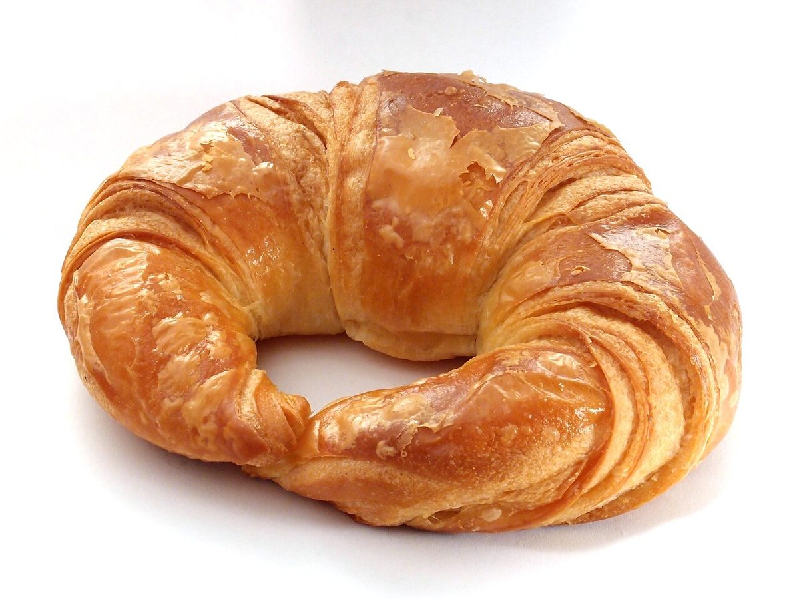
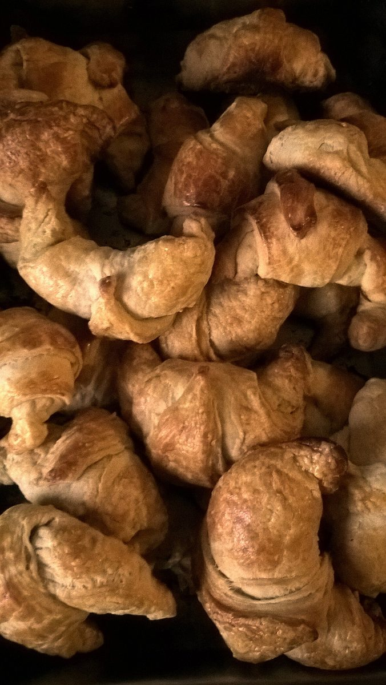
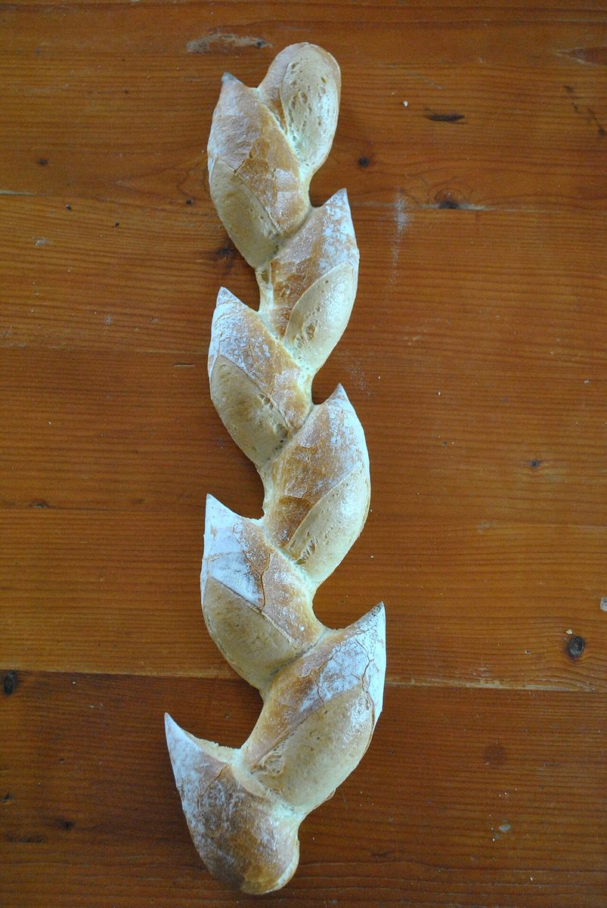
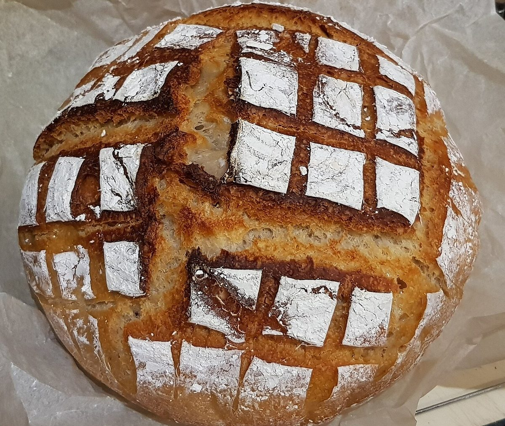
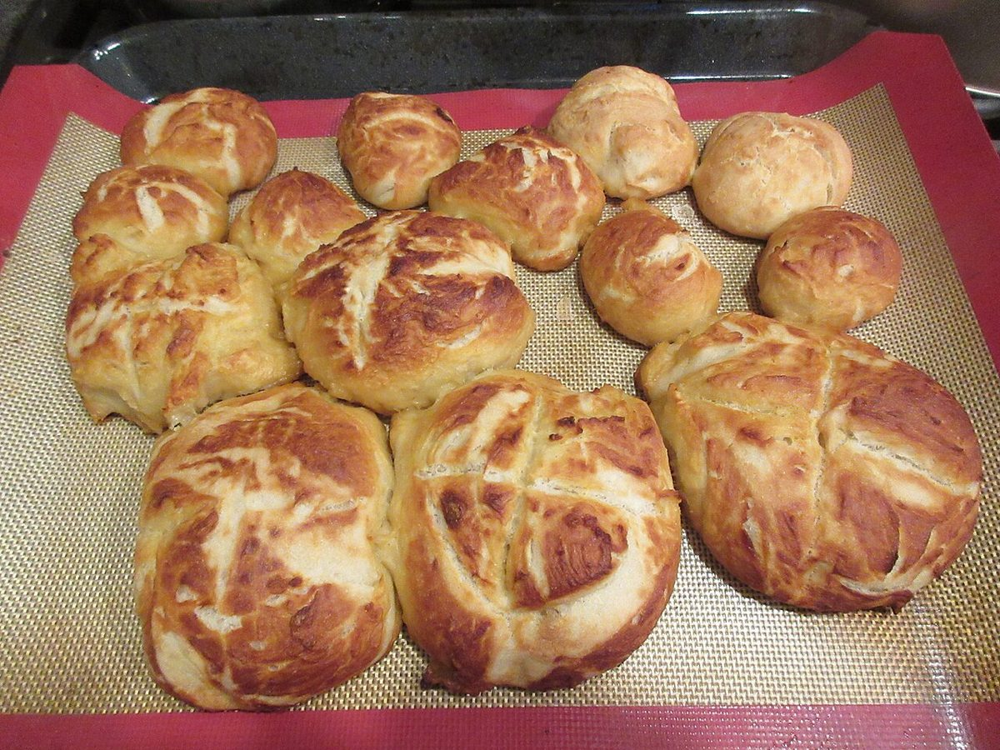
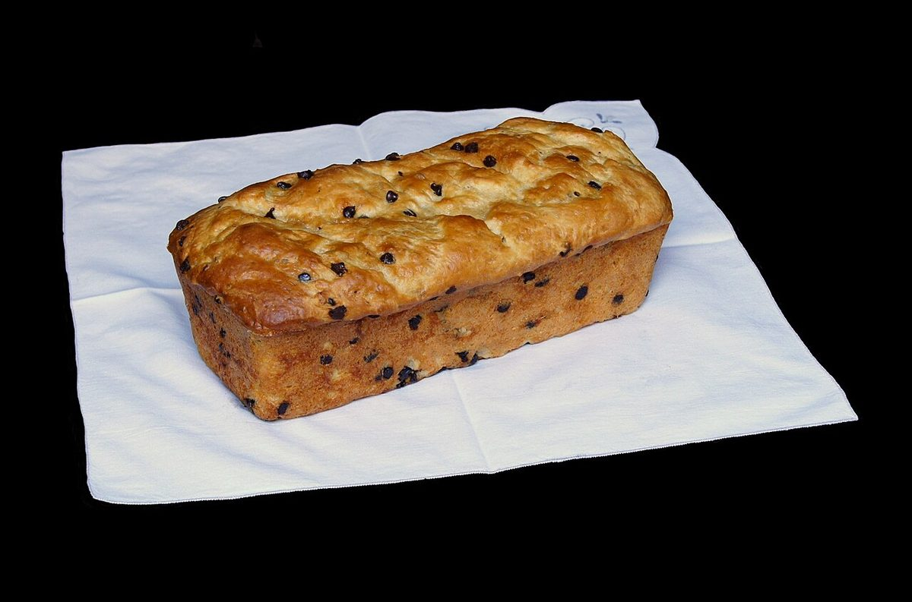

制作側の連想
「ゴースト」から思いついた、不透明度のスライダー
店名の由来は分かりません。制作側は「ゴースト」という言葉から、向こうが透けて見えるほどうっすらした、淡い白さを連想しました。画像編集ソフトの「不透明度」を0%から100%へ動かすと、うっすらしていた絵が、少しずつくっきりしていきます。このサイトは、その目盛りに沿って、ページごとに少しずつ濃くなる作りにしています。上のメニューの数字(20%〜100%)がその目盛りです。お店の理念や由来とは無関係な、制作側の連想です。
うっすらから、くっきりへ
同じ並びで、濃さだけ20%ずつ。
写真は飾りとして濃さを変えています(上にカーソルを置くと100%になります)。お店のものではなく、国外または撮影地不明のフリー素材のイメージです。
- 20%

撮影地不明のイメージ - 40%

撮影地不明のイメージ - 60%

撮影地不明のイメージ - 80%

国外のイメージ(米国) - 100%

撮影地不明のイメージ
ご案内
お店のこと(確認できたものだけ)
| 所在地 | 〒047-0034 北海道小樽市緑３丁目１２−４１ |
|---|---|
| 電話 | なし |
| 営業時間 | 準備中 |
| 定休日 | 準備中 |
| ご予約 | 準備中 |
| 駐車場 | 準備中 |
| SNS | Instagram @ghostbaker2023 |